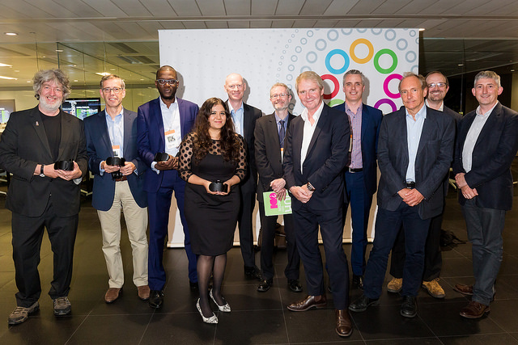

Celebrating Generation Open – ODI awards network thinkers who are changing the world

Sir Tim Berners-Lee and Sir Nigel Shadbolt present Open Data Awards to 2015’s open data champions from around of the world
This evening, (Thursday 9 July 2015) the ODI celebrates its second annual Open Data Awards, at Bloomberg London, celebrating a generation of network thinkers who are changing the world with open data.
Awarded by ODI Co-founders, Sir Tim Berners-Lee and Sir Nigel Shadbolt, 300 delegates convened to recognise today’s open data champions creating real world impact. From Kenya, Uruguay and Indonesia, to Brussels, Italy, and Ukraine, the ODI received over 500 nominations commending unsung heroes working with open data worldwide.
The high quality of award nominations this year exemplifies the diverse use of open data, bringing together worlds and catalysing network thinking. Entries more than doubled from 2014, reflecting growth across every sector, including industries such as pharmaceuticals, large corporations and finance.
2015 Open Data Award winners
Open Data Business Award winner: OpenCorporates
UK startup, OpenCorporates has developed the largest open database of company information, with over 85,500,000 organisations worldwide. OpenCorporates provides accurate data about organisations and their structure, providing context to complex company activity.
Hera Hussain, OpenCorporates Communities and Partnerships Manager said:
“We’re delighted and proud to have won this award. When we launched OpenCorporates we had a vision for an open database with tens of millions of companies from all over the world. We’re now in sight of 100 million companies, used regularly by journalists, investigators, governments, even banks. This is a testament not just to the power of OpenCorporates, but of open data itself.”
Read more about OpenCorporates in their Q&A interview
Open Data Innovation Award winner: Medicines for Malaria Venture
Medicines for Malaria Venture (MMV), based in Geneva, facilitates open-source development of antimalarial drugs in the pharmaceuticals industry. MMV has launched 4 new antimalarial drugs, and developed a ‘malaria box’ of 400 open source antimalarial compounds, freely available to anyone wishing to develop new drugs in developing countries.
Timothy Wells, Chief Scientific Officer at MMV said:
“Malaria is one of the most deadly diseases we face, and one that particularly targets small children in Africa and Asia. This award reinforces the value that the community as a whole places on our efforts to maintain as much openness and transparency as possible. We hope it will catalyse new relationships and partnerships to help us keep transforming the landscape of drug discovery for neglected disease.”
Open Data Social Impact Award winner: BudgIT
BudgIT is promoting widespread understanding of spending and budgets in Nigerian government through a breakdown of government spending in its portal, whilst also working with citizens to provide further datasets in public demand.
Oluseun Onigbinde, Co-founder at BudgIT said:
“This is another testament to our idea of ensuring that citizens have equal access to public finance information regardless of their literacy skills or level of interest in governance. We are glad to recognised by the ODI and commit ourselves to ensure data transparency and citizen literacy beyond Nigeria and across Africa.”
Read more about BudgIT in Oluseun's Q&A interview
Open Data Individual Champion Award winner: Mo McRoberts
Mo McRoberts, Chief Technical Architect at the BBC, has influenced open data integration into the BBC’s portfolio of work, developed an open data platform for the BBC, best-practices and policies for open data across the broadcast industry, whilst widening open data awareness.
Mo McRoberts, Chief Technical Architect at the BBC, said:
“This is an amazing honour, and if honest I’m a little lost for words. There’s an awful lot of work still to do before we can really realise the potential of open data at a large scale, and I really want to see what happens when that time comes.”
Read more about Mo's work in his Q&A interview
Open Data Publisher Award winner: Greater London Authority
Greater London Authority has pioneered the release of local and regional government data as open data in London. GLA’s London Datastore publishes 600 datasets with open data certificates to assure quality. GLA’s exemplary work with Transport For London opened up transport data now used in hundreds of 3rd party apps and published the London Schools Atlas.
Andrew Collinge, Assistant Director at Greater London Authority said:
“London’s City Data team is absolutely delighted to be recognised in this way by the ODI. We are entering a new period for open data; where supply will broaden out to include other city data partners like utilities and our power to exploit it will increase significantly. We are committed to pushing forward the London open data agenda, as well as supporting standards and capacity building. This way, we stand the best possible chance of changing lives and making a difference to the way London is run.”
Read more about GLA in Andrew's Q&A interview
Generation Open fuels global movement
Gavin Starks, CEO at the ODI said:
“Congratulations to our award winners for their achievements – and to our judges and team for reaching such a diverse set of leaders and innovators from around the world. The culture and skills that have developed over the past 25 years of the web have created a generation of network thinkers – people who see and make connections without boundaries to solve problems. I see this set of open data leaders as inspirational to our emerging generation of open innovators: Generation O”.